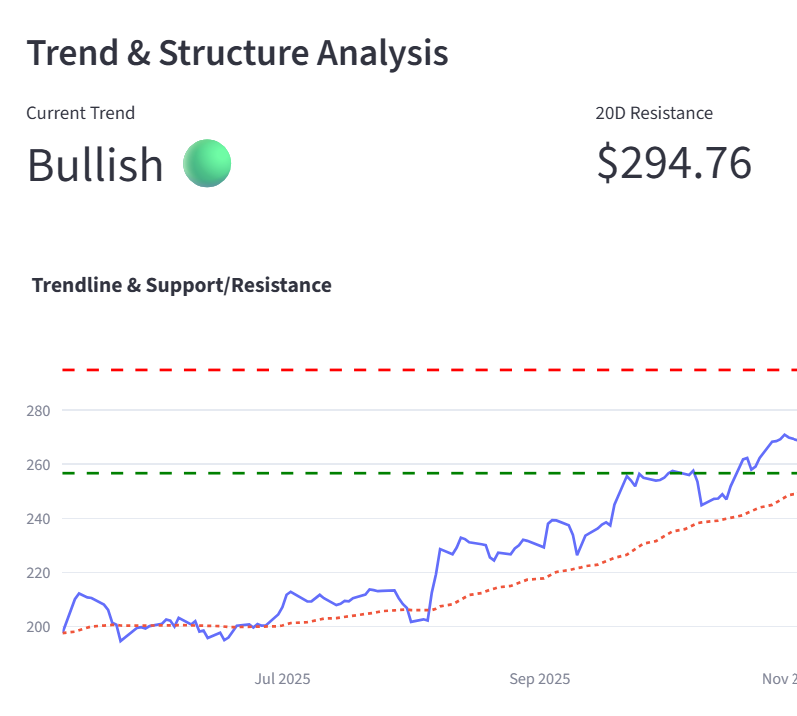
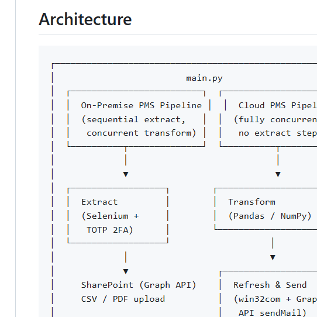

Stock Price Analysis Web app
Web App (Python, Streamlit)
Data & Analytics Engineer | B.S. Actuarial Science (GPA 3.5)
Highly motivated professional with a background in Actuarial Science and extensive experience leveraging Python (Pandas, Selenium) and SQL for end-to-end data automation. Specializing in building robust ETL pipelines and architecting standardized data models within SharePoint and cloud environments. Passionate about applying mathematical and statistical principles to ensure data integrity while transitioning into Analytics Engineering to scale predictive analytics and strategic business communication.

Web App (Python, Streamlit)

Python (Selenium, Pandas, Graph API)

Power BI

SQL, Power BI